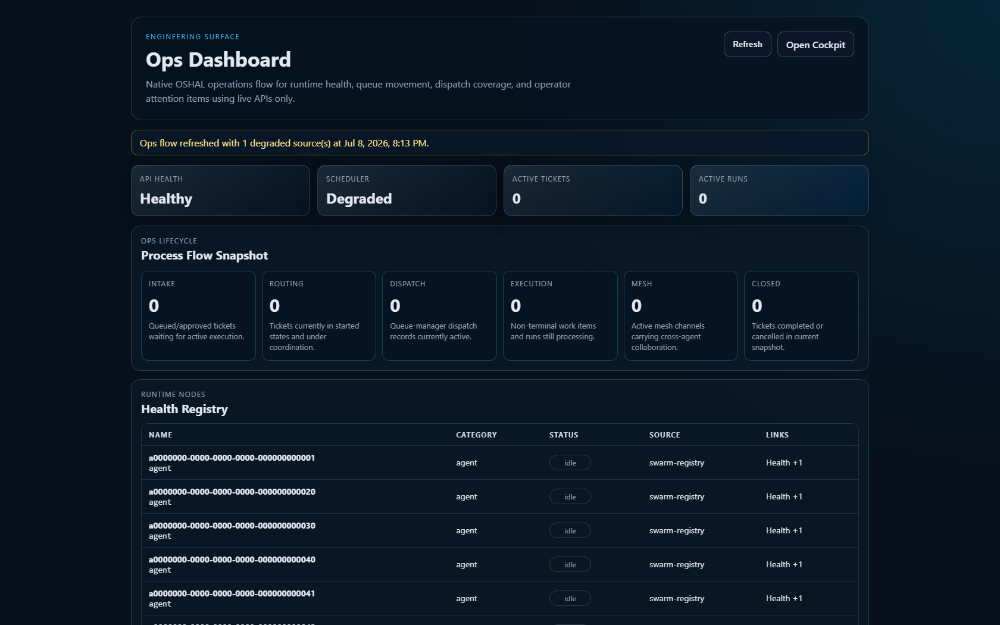
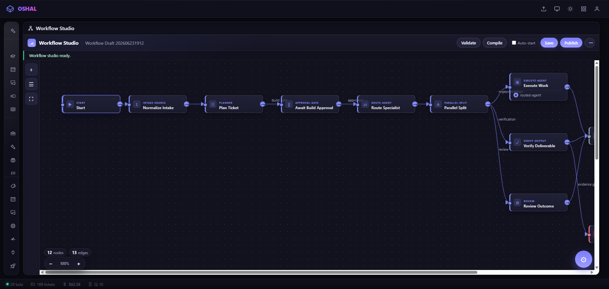
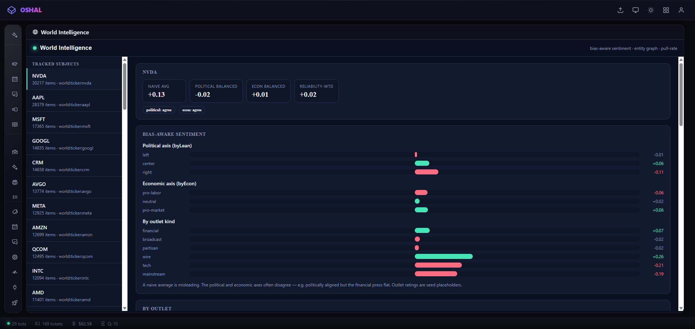
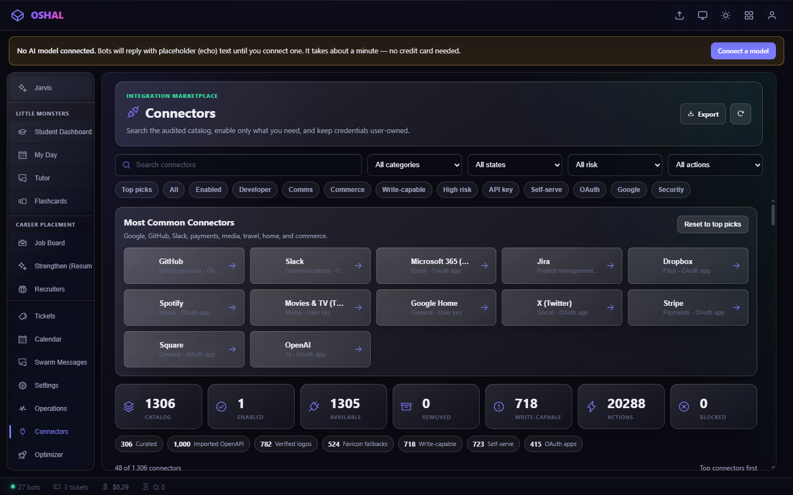
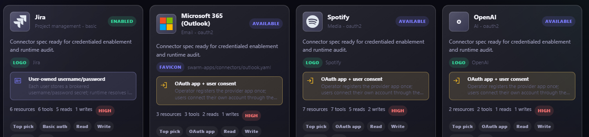

Apps, packages, and mobile UX
Use this for an installed application, its responsive surface, or application-specific behavior.
● Open-source agent orchestration
oshal is an open-source platform for running swarms of AI agents on infrastructure you control — one platform that scales from a laptop to a Kubernetes cluster. Bring any agent harness, any model, your own keys. Your data stays home.
No account needed — the demo drops you into a live hosted swarm as a read-only guest. Have an account? Sign in / sign up.
$ docker compose up -d ✔ controller healthy — orchestrates, never calls an LLM ✔ postgres · redis · chromadb healthy ✔ 12 bot nodes joined the mesh → cockpit ready at http://localhost:35457
Live GitHub intake /requests
Signed GitHub issue events enter the oshal backlog in seconds. Choose the queue that owns the change; no GitHub Action or paid runner is required.
Use this for an installed application, its responsive surface, or application-specific behavior.
Use this for the platform core — orchestration, cockpit, and security.
bug or defect
remains open for human verification. Only a non-defect request explicitly accepted as
code-write can close when its configured release PR lands; internal completion alone never closes GitHub.
The request queues are public — open an issue on the platform repo or the app store repo. Do not report security vulnerabilities in an issue; email maintainer@emeraldcoastsystemsgroup.com.
Hosted agent platforms are powerful — and they come with their models, their cloud, and their data terms. oshal closes that gap for businesses and individuals alike: the same swarm-scale automation, on hardware and accounts you own.
Point it at your life and it connects immediately — lights, thermostats, calendars, inboxes, files, money — into one encrypted store on your own hardware. Then wire anything to anything: a signal from one connector can drive actions across all the rest, and none of it leaves your house.
# a cross-domain rule: money watches, house celebrates when: finance.net-worth: above $1,000,000 # your own bank link then: - home.lights: flash # every room, on and off - notify.text: "go look at the app" - notify.call: voice announcement - notify.email: milestone recap
Sign in to your own Google, SmartThings, bank, and social accounts. Tokens are encrypted per user on your machine — no third party in the middle.
The finance bot watches the number; the home bot owns the lights; notifications fan out. Data, devices, and workflows compose — connect, don't code.
Everything lands in a per-user encrypted store you host. Nothing posts, sends, or dials without passing your approval gate first.
Applications — built on the framework, 7 live in the repo today
Paper or real. Talk an idea through with the assistant and it becomes a monitored strategy: backtest it just by describing it, wire it into the signals already flowing through your swarm, and run it paper-first. Going live is a deliberate double opt-in — every position watched, one kill switch to halt everything.
Runs paper-first by default; going live is a deliberate double opt-in. No live track record is published here — nothing on this page is financial advice.
You place the order. Add things to your cart in chat; the swarm hunts the best price and deep-links the filled cart into Walmart or Amazon. It never holds your payment details and never buys on its own — the last click is always yours.
It knows who's talking — and never phones home. Turn on always listening and the assistant wakes on your phrase, keeps a transcript you control, and tells people apart by voice. Speaker separation runs on local models (pyannote + ERes2Net) in a hardened sidecar on your own machine; voiceprints are encrypted and owner-private, strangers get a stable "Unidentified Person" label until you name them, and the whole thing is opt-in, off by default, with retention you set and delete controls you own.
Bench-tested: two voices separated with turn boundaries within half a second; the same voice re-identified across separate recordings at 0.95 similarity against a 0.82 match threshold.
Two things live here: the framework — the rails below — and the applications built on top of it, like the ones above. oshal doesn't compete with agent frameworks or model vendors — it wraps them. Neutrality is the product: best-of-breed gets re-decided on every call, and no single vendor can hold your workflows hostage.
Five first-class runtimes behind one interface: Cline — the general harness, any model, any API — plus Claude Code (Anthropic), Codex (OpenAI), Gemini (Google), and external agents over A2A. A single ticket can flow across vendors: one bot drafts, another reviews, a third documents — sharing one workspace.
40 providers wired in — Anthropic, OpenAI, Google, Bedrock, Groq, Cerebras, Mistral, and more — plus fully local inference through Ollama, LM Studio, and LiteLLM, which run as providers under the Cline harness. Bring your own keys, or run models that never touch the internet.
A connector marketplace with hundreds of definitions and a live-proven core — Gmail, GitHub, Slack, Jira, LinkedIn, and more. OAuth per user, tokens encrypted at rest, capabilities scoped per bot. Adding a provider is configuration, not a rewrite.
Declare ticket types and multi-stage pipelines in a manifest, or draw them in Workflow Studio. Stages can require an explicit human approval before anything posts, sends, or changes production. The human stays in the loop by design.
OIDC single sign-on, database-enforced row-level security on every tenant table, AES-256-GCM per-user token encryption, and a token broker so bots receive short-lived scoped credentials — never the master key.
Each LLM call is metered per bot, per provider, per model, per ticket — real cost accounting in your own Postgres. And Token Chase captures calls as replayable frames, so cheaper model-and-harness lanes can be graded against the original for equivalence before you switch.
oshal doesn't ask your team to switch tools. It sits between the pieces, and any component can be subbed out or integrated — a model, a harness, a connector, an entire workflow engine.
Jira, ServiceNow, or your own queue. Nobody migrates anything — the source of truth stays the source of truth.
A swarm bot picks the ticket up, pulls context through your connectors and runbook RAG, does the work on your infrastructure, and passes your approval gates.
Resolution, artifacts, and the cost of producing them post back to the original ticket. Your team never left their tool.
A workflow step can be anything. Another workflow engine. An external process. A different vendor's agent. A human approval. The swarm genuinely doesn't care what a step runs — the wrapper owns the integration, so every part stays replaceable and no single vendor ever holds the whole.
The separation is strict: the controller routes tickets, phases, and approvals — it never calls an LLM. Bot nodes own all model execution, each running its own harness against its own provider, collaborating over a Redis mesh.
One ticket, many vendors. Because every harness sits behind the same interface, a single piece of work can move across them — a Codex bot drafts, a Claude bot reviews, a Gemini bot writes the runbook — with every call metered and every artifact in one shared workspace. oshal treats the harness itself as a swappable layer.
Unretouched screens from the current pre-release build. It still wears the project's working name in the chrome — the rebrand hasn't reached the app yet, and we'd rather show you that than restage a screenshot.





One Docker image boots as controller or bot node — the platform never changes, only the substrate beneath it. Each tier does everything the one below it does, then adds a single new power. We label what's shipped versus what's ahead, because honest engineering is a feature.
You — one machine. One command brings the whole stack up on localhost, and a zero-keys demo needs no accounts at all. Chat with a swarm that routes every task to the right harness and model on your own keys, wire in your own accounts, and pull the results up on your phone or throw them on the TV.
the floor every tier above inherits
Your household or team — a box you own. Everything the laptop does, now shared: OIDC sign-on and database-enforced per-user isolation, so each person sees only their own data. Run the models locally through Ollama, LM Studio, or LiteLLM — no token limits, no per-call vendor bill, nothing leaves your walls.
adds → multiple users · self-hosted models
Your enterprise — a cluster you control. Everything the server does, isolated per tenant and built to scale. Tenant isolation is enforced at the database today — row-level security on every tenant table, each tenant its own data partition. Cluster autoscaling, batch-style scale-out for agent workloads, and automated per-tenant provisioning are still ahead — tracked in the open on the roadmap.
adds → per-tenant isolation · in-cluster models · scale-out
Your whole ecosystem — every device, one console. Nodes on any machine — a laptop, a datacenter GPU box, a remote workstation — enlist into one mesh, and each job routes to whichever node owns the data, the tools, or the hardware. Edge nodes are live and proven on real hardware.
adds → distributed nodes · one control plane
on the roadmap → monitoring-to-remediation loop
No scoreboard. Nobody can measure a rival's product from the outside, and a chart that puts us alone in the winning corner is a chart nobody believes. So: relative strength only, no scores — and the categories we lose go first. By our own read, seven of these fifteen still belong to someone else.
Bar length is relative strength as we read the field — not a benchmark, and not a number we'd ask you to trust. The point isn't the ranking. It's the shape: the things we lose are features of a hosted product, and the things we win are properties of a platform you own.
Every bot in the swarm exposes a self-test. When one breaks, a self-healing agent captures a baseline, patches the actual source, redeploys the container, re-runs the test, and compares against the baseline — a red team / blue team on the change itself. If the patch loses, it's rolled back automatically; it can run with no human at the wheel.
A chatbot can't do this to itself, and a SaaS vendor can't let it — that would hand agents the keys to their own product. It only works when you own the whole stack. Here, you do.
Honest scope: this is health / regression testing — did the patch pass and not break the baseline — not a marketing-style traffic-split experiment. The pieces exist elsewhere (canary rollback, AI code-fixers, AIOps); the closed loop inside a stack you own is the rare part.
Ask any assistant for an app and you get code you now have to host, secure, theme, and wire up yourself. Here that work is already done before you start. You bring the idea; the platform brings the rest.
Sign-on and per-user isolation are the platform's, enforced at the database. Your family or your team logs into the same app and sees only their own rows. You don't write it.
Ribbon, theme, and layout come standard, so an idea doesn't die in CSS. Override them when you have taste — ignore them when you have a deadline.
The connector catalog and the credential broker are already there. An app opts in and gets user-owned tokens — no OAuth plumbing to invent.
Any harness, any model, your keys, your hardware. The app never names a vendor, so swapping one is config — not a rewrite.
There are framed, faintly ridiculous portraits of every family pet on our wall. Then a new puppy arrived, the kids wanted him up there too — and the company we'd used was gone.
Portrait Studio is what we wrote instead. It puts a face — a person's or a dog's — on a human body in a themed scene: American Gothic with the pitchfork, a steel-mill worker in the sparks, a Renaissance noble. The same app, same code path, also does the serious version: a studio headshot with a real backdrop, attire and framing.
A chat assistant can draw your dog. It can't hand you an application you own — one your whole family signs into, with its own database, its own agent, installed into your own stack from a store.
Shipped: the app, its agent, its schema, its tile — installable today, on your keys. Next: pulling the source photo straight from your photo library and publishing the finished headshot to a profile — both are connector additions on the roadmap, and connectors are composition, not a rewrite. This page marks features shipped only when they are.
Self-hosting isn't a deployment detail — it's the security model. Nothing leaves your infrastructure unless a workflow you approved sends it.
Connector tokens and API keys are encrypted at rest with AES-256-GCM, keyed to the individual user. A token broker hands bots short-lived, single-user credentials — the master key never leaves the controller.
Row-level security is live across every tenant table and forced on — the application runs as a least-privilege role, so one user's data is invisible to another even if application code gets it wrong.
OIDC authentication against your identity provider — Keycloak works out of the box. Anything that touches files, personas, or model execution is auth-gated; a mock-auth mode keeps local development friction-free.
Agents draft; you decide. Nothing posts to social, sends an email, or changes a production system without an explicit approval step in the workflow. Autonomy where it's safe, a gate where it isn't.
Ambient listening is opt-in and off by default. Speaker recognition runs on local models in a read-only sidecar — raw audio is processed ephemerally and never stored, voice embeddings are encrypted at rest and owner-private, and ambient data rides the standard export/delete controls. When per-person insights are on, oshal also keeps its own read of each consented voice — topics, tone, and follow-ups — as deletable inferences you can purge per person; declining a heard person stops and purges theirs, and children are never modeled.
Vendor agent harnesses are brilliant and boxed in. oshal gives them a neutral runtime: run them side by side on your own hardware, where they inherit your connectors, your security controls, your cost ledger — and collaborate over the mesh. Add a module; the platform does the rest.
An app declares its bots, personas, tools, ticket types, and UI surface in a single manifest. Hot-load it into a running swarm — no redeploy. The core stays undifferentiated; the manifest is the DNA.
A harness adapter implements run() and an optional health check; subprocess-spawning harnesses inherit shared plumbing from a base class. The Gemini harness landed as one ~300-line adapter.
Connectors are declarative specs with per-user brokered auth. Import them from OpenAPI definitions in bulk, scope their capabilities per bot, and let every app you build reuse them.
Describe a business process in plain language and the Forge interviews you, then packs a complete single-purpose bot — persona, manifest, tools, knowledge base — and registers it into the live swarm.
# a working app, one manifest name: support-triage ticketTypes: - id: support-triage workflow: workerBot: triage-bot bots: - id: triage-bot harnessType: claude-code # or cline, codex, gemini, a2a persona: personas/triage.yaml connectors: [zendesk, slack] ui: ribbon: { tab: Support } # hot-load into the running swarm POST /api/swarm/apps/load
The premise, proven
Little Monsters — available from the open app store — accelerates learning for students with learning disabilities, and it was built by students with disabilities; a dyslexic teenage girl led it. Record a lecture and it becomes notes, slides, and flashcards; assignments track themselves; ask a question and get help — on a laptop or a phone.
And because it's a packed bot, it's boxed in: the deterministic persona framework locks down cheating — it tutors, explains, and quizzes, but it won't do the work for the student. That was this platform's founding premise: building an app that's scalable, secure, and safe should be easy enough that anyone with a real problem can do it. The manifest declared her app; the platform carried the auth, the isolation, the bots, and the UI. Yours gets the same rails.
Close the gap between agentic AI and the people it works for — make swarm-scale automation something you run, not something you rent.
Any individual or business can operate enterprise-grade agent swarms on infrastructure they control — laptop to datacenter — with no vendor able to hold their data, keys, or workflows hostage.
Your keys, your data, your hardware. Every design decision starts from the premise that the user — not the platform, not a vendor — owns the substrate. If a feature requires surrendering that, it doesn't ship.
We don't bet your workflows on one framework or one model. Harnesses and providers stay interchangeable, so best-of-breed is re-decided on every call — and vendors compete for your work.
Docs describe what's built; the roadmap says what isn't. Shipped, in-progress, and planned are labeled — on this page too. Overclaiming is a bug.
AGPL-3.0, source-first, grassroots. No pricing page, no sales funnel, no enterprise edition holding the good parts back. Free means free.
Swarms draft, analyze, and prepare; people approve what leaves the building. Autonomy is earned per workflow, never assumed.
/api/readiness reports per-capability ok / off / fail — a deployment cannot report success while a capability it advertises has nothing behind itCheck it yourself: every claim in the shipped column maps to code you can read in the public repo, and the roadmap lives next to that code with today-vs-target status per item. If this page and the repo ever disagree, the repo wins.
A note from the builder
oshal is pre-release, and today it's one engineer's personal project. Where it honestly stands: better than most of what you can rent, and not yet what it becomes when a community pitches in from every side. The foundation is solid — a real platform with real nightly proofs, not a demo — and the whole point of shipping it open is that it doesn't have to stay a one-person effort.
Docker is the only prerequisite. The installer pulls prebuilt images — no clone, no build — generates every secret, brings the swarm up, and opens your cockpit. Pick the whole swarm or a bundle (kernel, gaming, jobs, Little Monsters with its office tools). When you're ready, plug in your own keys — they stay yours.
The source is live. The platform and the app store are public on GitHub under AGPL-3.0 — the code behind every claim on this page is there to read. Prefer to look before installing? The hosted demo drops you into a read-only guest session that touches no real accounts.
$ curl -fsSLO https://raw.githubusercontent.com/emeraldcoastsystemsgroup/oshal/main/scripts/oshal-install.sh $ bash oshal-install.sh → cockpit opens at http://localhost:35457
On Windows?
Download Install-OSHAL.bat and double-click it —
same installer, no terminal. Docker Desktop is the only prerequisite (the installer
offers to add it via winget). Prefer fully offline? A downloadable swarm snapshot
(images + installer, no registry needed) builds from
scripts/build-offline-bundle.sh.
Get it on your phone
The cockpit is an installable web app (PWA) — no app store, nothing to download here. It installs straight from your own swarm's cockpit URL once your swarm is running (or try it against the hosted demo): home-screen icon, full-screen launch, offline app shell.